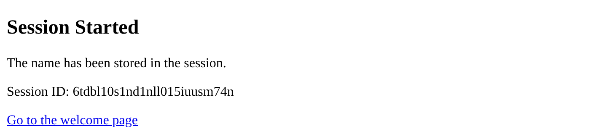
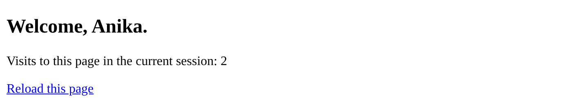
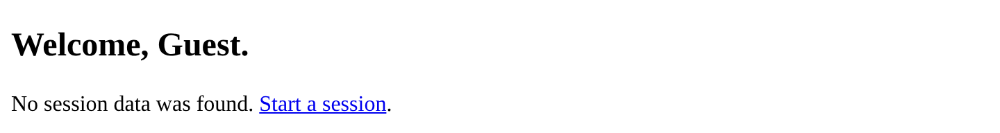

Write a PHP code to retrieve and display a session variable.
Program 9.1: Retrieving and Displaying a Session Variable
Concepts used
session_start(), creating, retrieving and modifying session variables, isset(), session_id(), fallback message.
Test data: Student name: Anika. The display page is opened, reloaded once, and finally opened in a new private browser window without visiting the first page.
Logic
- In
session-store.php, start the session, store the student's name and set a visit count of 0. - In
session-display.php, resume the session. - If the name exists in the session, increase the visit count, and display a welcome message with the name and the count.
- Otherwise, display a fallback message with a link to the first page.
Code
<?phpsession_start(); // must come before any output $_SESSION["student"] = "Anika"; // create session variables$_SESSION["visits"] = 0;?><!DOCTYPE html><html lang="en"><head> <meta charset="UTF-8"> <title>Store Session Data</title></head><body> <h2>Session Started</h2> <p>The name has been stored in the session.</p> <p>Session ID: <?php echo session_id(); ?></p> <p><a href="session-display.php">Go to the welcome page</a></p></body></html>
<?phpsession_start(); // resume the existing session if (isset($_SESSION["student"])) { $_SESSION["visits"]++; // modify a session variable}?><!DOCTYPE html><html lang="en"><head> <meta charset="UTF-8"> <title>Welcome</title></head><body> <?php if (isset($_SESSION["student"])): ?> <h2>Welcome, <?php echo htmlspecialchars($_SESSION["student"]); ?>.</h2> <p>Visits to this page in the current session: <?php echo $_SESSION["visits"]; ?></p> <p><a href="session-display.php">Reload this page</a></p> <?php else: ?> <h2>Welcome, Guest.</h2> <p>No session data was found. <a href="session-store.php">Start a session</a>.</p> <?php endif; ?></body></html>
Output
These are real screenshots, taken by running the program with the test data.



Understanding the output
The session ID is a random sample value; a different ID is created for every new session. The welcome page displayed the name stored on another page, which shows that the session variable survived from one request to the next. The count 2 shows that the value was modified and saved on each visit. The last output shows that a browser without the session cookie belongs to a different, empty session, and that the fallback prevents a warning.
How it works
Storing: session-store.php calls session_start() before any output. Since the browser has no session ID yet, PHP creates a new session and arranges to send the PHPSESSID cookie. The two assignments create the session variables, which PHP saves at the end of the request. The page also displays the session ID through session_id().
Retrieving: When the link is clicked, the browser sends the PHPSESSID cookie with the request for session-display.php. session_start() uses the ID to load the stored data, so $_SESSION["student"] exists. The program increases the visit count and displays the welcome message and the count. Each reload increases the count by one.
Fallback: In a new private window, the browser has no session cookie, so session_start() creates a new, empty session. The check isset($_SESSION["student"]) returns false, the count is not changed, and the else part displays the guest message instead of producing a warning.
Run it yourself
Real PHP 8.3 runs inside your browser (nothing is sent to a server). Forms, links, cookies and sessions work as they do in XAMPP. The first run downloads PHP, so it needs internet and takes a few seconds.
Try this:
- Open session-store.php, follow the link, then reload the welcome page a few times.
- Click "Clear cookies & session" (like a new private window) and open session-display.php.
Running it in XAMPP
Start Apache, save both files in C:\xampp\htdocs\phpbook\ch09, open http://localhost/phpbook/ch09/session-store.php, click Go to the welcome page, then click Reload this page. Finally, open http://localhost/phpbook/ch09/session-display.php in a new private window.
Common mistakes
- Omitting
session_start()on the display page, so that$_SESSIONis empty although the data exists on the server. - Writing HTML or a blank line before
session_start(). - Reading
$_SESSION["student"]withoutisset()or ??, which gives a warning when the session has no such variable. - Expecting the session to be shared between two different browsers; each browser has its own session cookie.